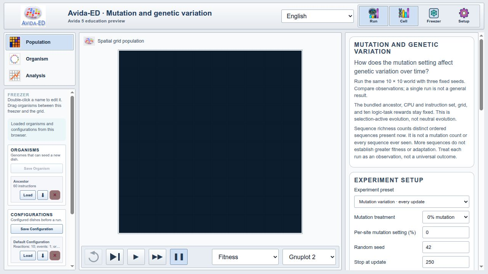
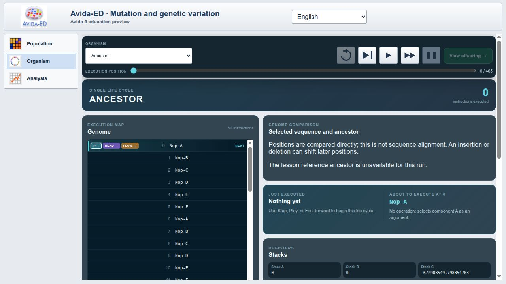
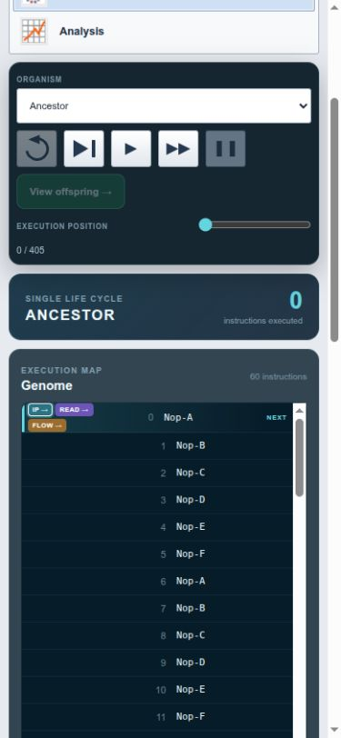
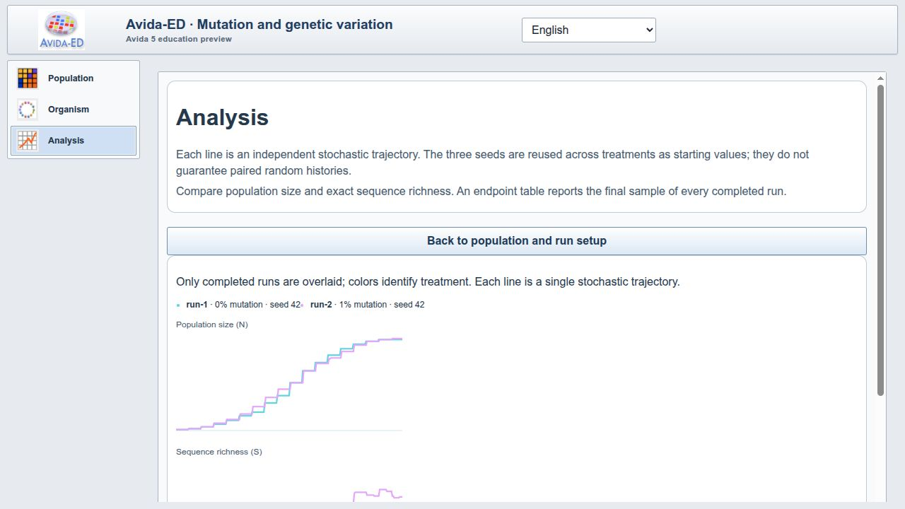
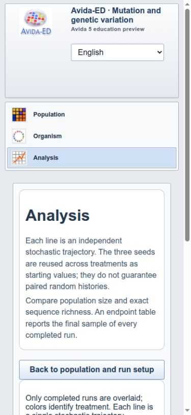
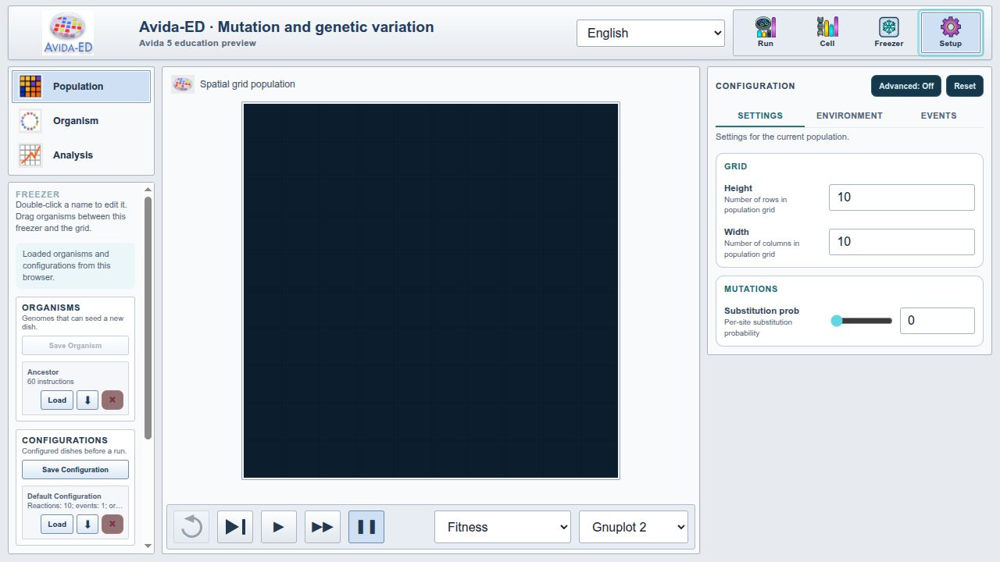

Result
The visual pass found and corrected the reported Organism layout failure. It also corrected narrow-screen toolbar overflow, horizontal scrolling in the Freezer, low-contrast text, and pale Analysis captions.
This supports the claim that the prototype's currently implemented surfaces are visible and usable at desktop and narrow widths. It does not establish tutorial-level parity with Avida-ED 4, validate scientific wording, or replace instructor and learner review.
Scope and method
The audit used the rebuilt WebAssembly application in a Chromium-based browser. The desktop viewport was 1280 × 720 pixels; the narrow viewport was 390 × 844 pixels.
The screenshots archive the 30 September build. Their visible “ten logic-task rewards” text and reaction count predate the 1 October correction to the default task-reward profile; the corrected values and remaining engine-level difference are documented in the interface map.
The pass covered every interface area described as functional or available in the Avida-ED 4 to 5 port assessment: Population navigation and controls, Organism execution and selected-cell inspection, Analysis with two completed 250-update runs, the Freezer, and Configuration.
The review checked rendered placement, visibility, horizontal overflow, text contrast, and access to primary content. It exercised the controls needed to reach populated states. It did not perform every import, export, drag-and-drop, keyboard, or error-recovery path.
Starting the second Analysis run displayed the expected browser confirmation for replacing the active run. Accepting it allowed the second 250-update run to complete normally; the pause was dialog handling, not evidence of a simulation-performance delay.
Findings and disposition
| Area | Finding | Disposition |
|---|---|---|
| Organism desktop layout | The workspace occupied the 188-pixel sidebar column. Controls overlapped, primary content was obscured, and the view selector moved below the workspace. | Fixed component order and explicit grid placement. |
| Organism narrow layout | The selector and transport controls required horizontal scrolling; desktop placement could create an off-screen implicit column. | Reset narrow grid placement and wrapped the controls. |
| Organism contrast | Sequence-comparison notes inherited dark text while displayed on dark panels. | Applied an explicit Organism foreground color. |
| Freezer | Checkpoint controls and item metadata created a horizontal scrollbar. | Constrained nested widths and retained vertical scrolling. |
| Configure | Descriptions and active tabs had weak contrast on the light education surface. | Added light card surfaces and education-theme colors. |
| Selected cell | Summary text was faint, and the multicolumn genome list flowed into hidden horizontal columns. | Increased contrast and used one vertically scrollable genome column. |
| Analysis | The responsive layout worked, but chart captions were too pale on white. The apparent second-run delay was the expected new-run confirmation awaiting a response. | Applied the standard education foreground color; accepted the confirmation and verified both 250-update runs completed. |
| Population | The desktop and narrow layouts kept controls and the grid in view without page-level horizontal overflow. | No structural change beyond shared Freezer fixes. |
Rendered evidence






Remaining review work
- Walk representative Avida-ED 4 tutorial videos and record explicit exceptions.
- Repeat the workflow in a second browser and on the presentation laptop.
- Complete keyboard-only, import/export, drag-and-drop, and error-recovery checks.
- Review Spanish wording and scientific terminology with a fluent subject-matter reviewer.
- Obtain instructor and learner feedback before making classroom-readiness claims.